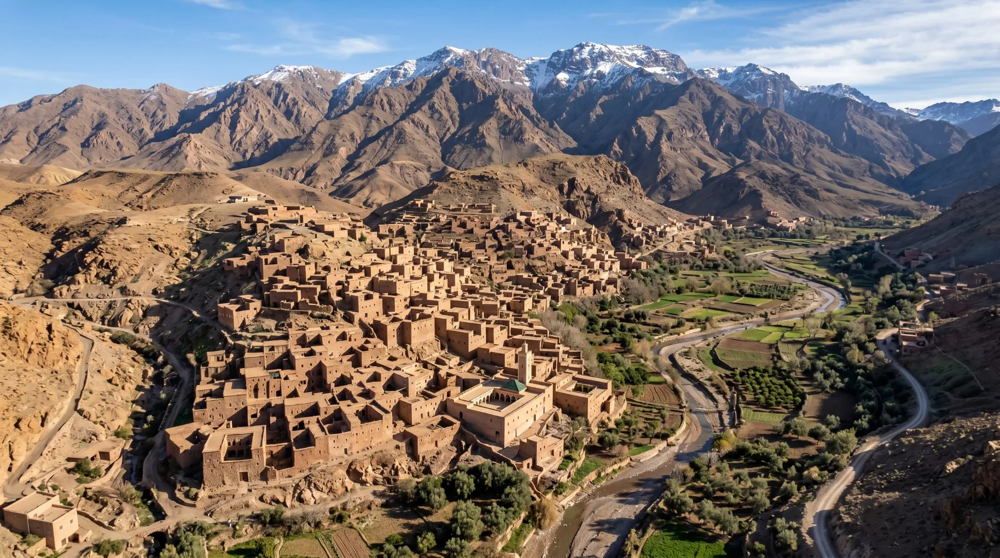
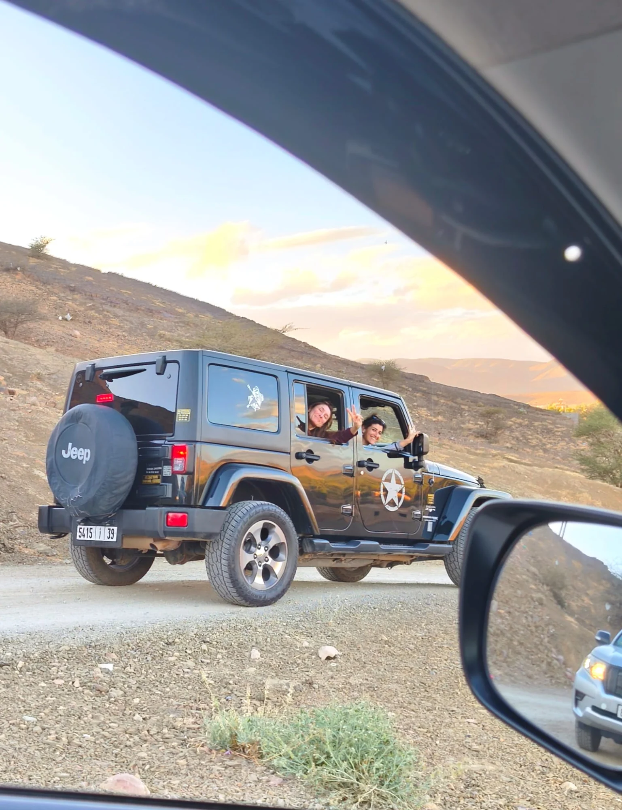
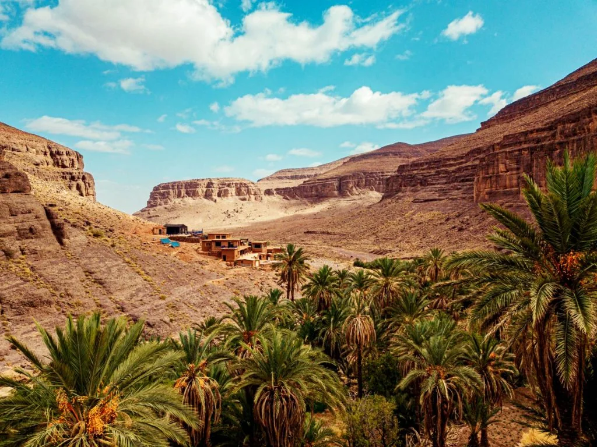
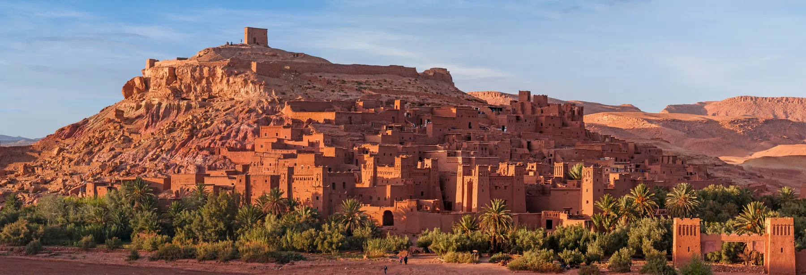
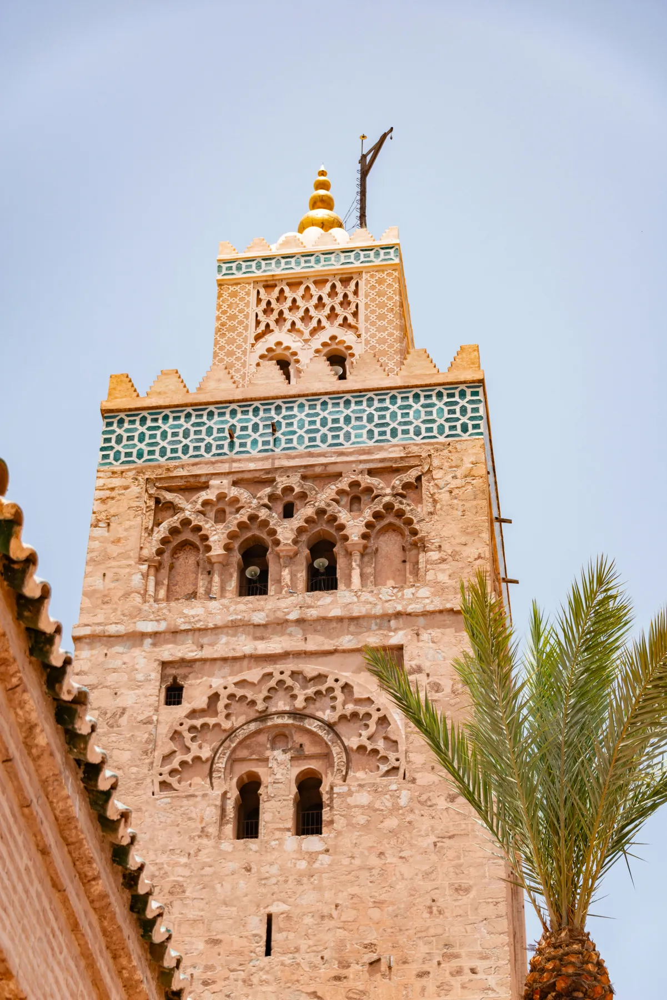
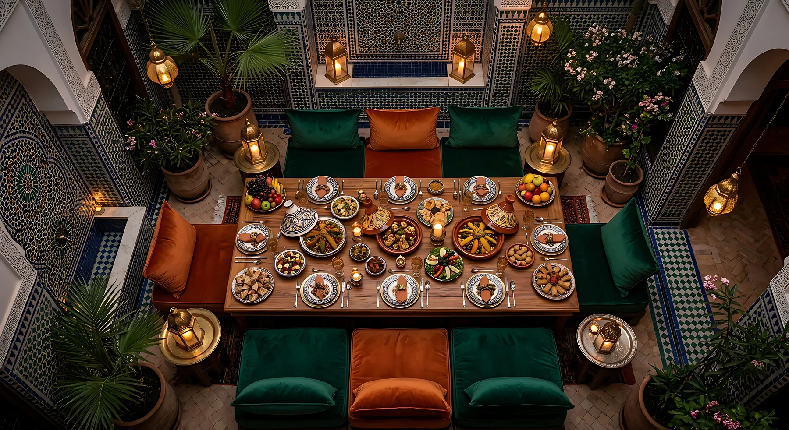
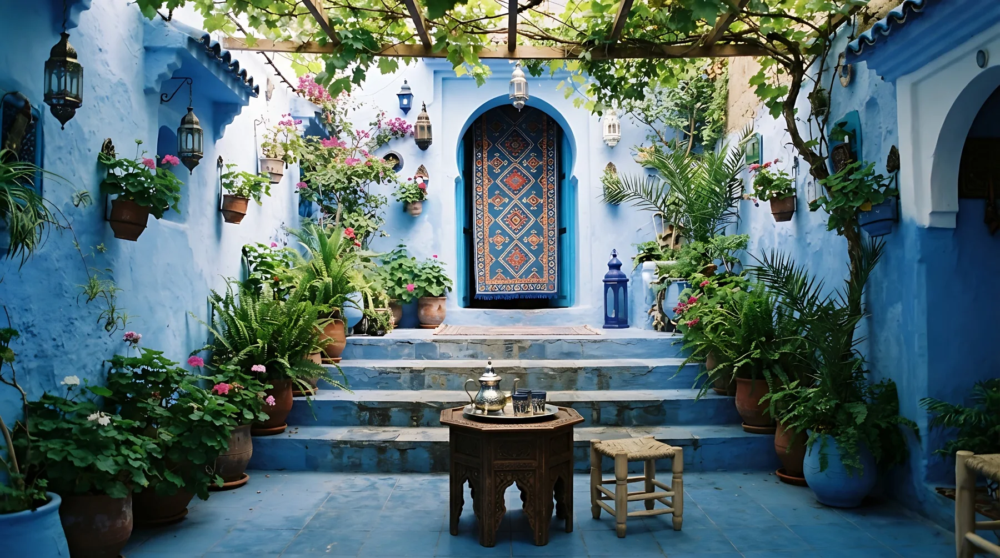
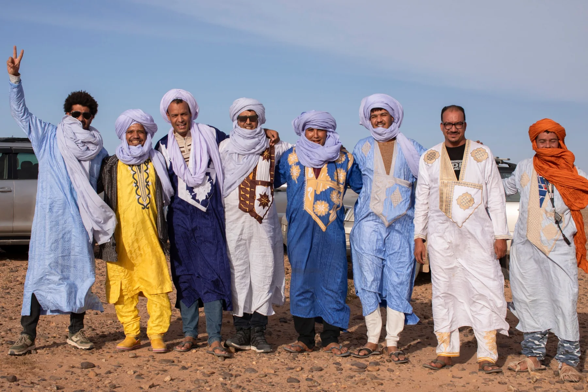

Nous pouvons commencer à Casablanca ou à Marrakech, selon vos vols et la façon dont vous souhaitez parcourir le pays.
Si nous commençons à Casablanca, nous entrons doucement dans le pays avant de nous diriger vers Fès. Si vous préférez arriver à Marrakech, nous pouvons adapter le parcours.
Le voyage s'adapte à vous, et non l'inverse.
JOUR 2 · Fès
JOUR 2 · Fès
Le cœur historique
Nous arrivons à Fès. Sa médina, ses ruelles, ses artisans, ses couleurs et ses métiers traditionnels nous montrent l'un des visages les plus anciens du Maroc.
Une journée pour découvrir.
JOUR 3 · Fès
JOUR 3 · Fès
Se perdre fait aussi partie du voyage
Une autre journée pour simplement se perdre.
Car à Fès, se perdre fait aussi partie du voyage.

JOUR 4 · Fès → Dadès
JOUR 4 · Fès → Dadès
Vers le sud
Nous laissons les villes derrière nous. Nous traversons l'Atlas et le paysage commence à changer.
Les montagnes, les vallées et les premières kasbahs nous annoncent que nous entrons dans un autre Maroc. Nous arrivons dans la région du Dadès.

JOUR 5 · Dadès → Erg Chigaga
JOUR 5 · Dadès → Erg Chigaga
Vers le Sahara
Nous continuons vers le sud. Palmeraies, oasis, villages de pisé et paysages de plus en plus arides nous accompagnent en chemin.
Jusqu'à ce que nous quittions le goudron. Nous montons en 4x4. Et nous arrivons à Erg Chigaga.
JOUR 6 · Erg Chigaga
JOUR 6 · Erg Chigaga
Laisser le désert donner le rythme
Deux nuits pour laisser le désert donner le rythme.
Lever du soleil entre les dunes. Marcher sur le sable. Partager un thé. Pain cuit sous le sable. Turbans et henné. Musique sahraouie à la tombée de la nuit. Et du temps pour simplement être là.

JOUR 7 · Erg Chigaga → Oasis de Fint
JOUR 7 · Erg Chigaga → Oasis de Fint
Du désert aux oasis
Nous quittons les dunes et commençons le chemin du retour. Le paysage se transforme à nouveau.
Le désert laisse place aux palmeraies, aux oasis, aux villages et aux kasbahs. Nous arrivons à l'oasis de Fint, où nous pouvons marcher, partager un thé et savourer un repas local.

JOUR 8 · Oasis de Fint → Aït Ben Haddou
JOUR 8 · Oasis de Fint → Aït Ben Haddou
La kasbah du sud
Nous continuons vers Aït Ben Haddou, l'une des grandes kasbahs du sud. Ici, le voyage change de nouveau de paysage.

JOUR 9 · Marrakech
JOUR 9 · Marrakech
La ville rouge, à votre rythme
Nous arrivons à Marrakech après avoir traversé le sud et l'Atlas. Nous pouvons enfin ralentir de nouveau.
Trois nuits pour profiter de la ville, retourner dans la médina, acheter de l'artisanat, découvrir de nouveaux recoins ou simplement se reposer.

JOUR 10 · Marrakech
JOUR 10 · Marrakech
Une journée à choisir
Nous pouvons aussi organiser un hammam, un spa, un atelier de cuisine ou une expérience gastronomique.
Marrakech à votre rythme.

JOUR 11 · Marrakech
JOUR 11 · Marrakech
Une matinée de plus à Marrakech
Une matinée de plus pour parcourir la médina, flâner dans ses boutiques et dire au revoir à la ville sans se presser.
Marrakech à votre rythme.

JOUR 12 · À bientôt, Maroc
JOUR 12 · À bientôt, Maroc
La fin s'adapte au voyage
Le voyage peut se terminer à Marrakech ou à Casablanca, selon vos vols.
Nous adaptons l'itinéraire pour que le voyage ait du sens du début à la fin. Et pour que vous n'ayez pas à organiser le Maroc autour de notre itinéraire.
Votre voyage, à votre façon
Cet itinéraire est un point de départ.
Nous pouvons adapter le parcours, la durée, les hébergements et les expériences selon votre temps, vos centres d'intérêt et votre manière de voyager.